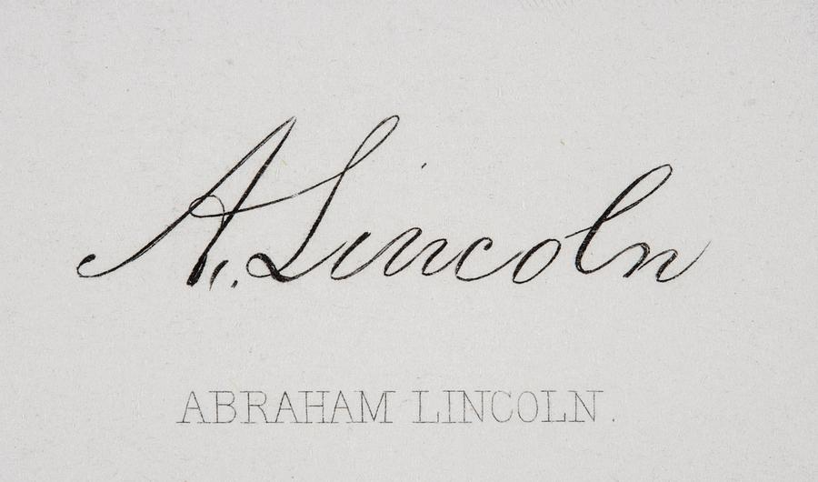
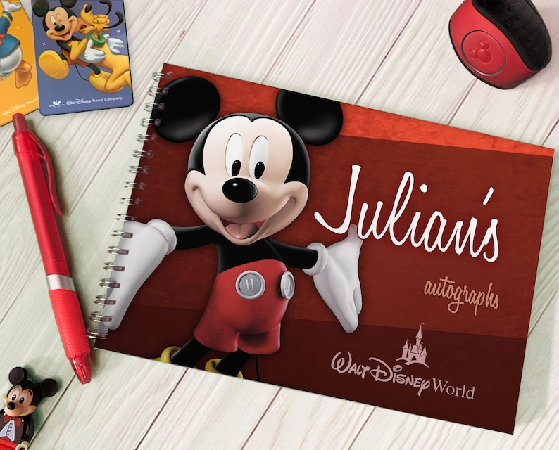

My Vocabulary Page
tap water n(u) //

[also: running water] water supplied through pipes to taps in a building
1/ "How much tap water does each person use at home every day?"
drink (the) tap water
2/ Is the tap water safe to drink?
3/ Avoid drinking the tap water when you first arrive in the country.
4/ "Did you drink tap water and get sick?"
5/ "Your home's tap water should be safe to drink."
6/ "Preferably tourists should be drinking tap water out of respect to
their hosts to reduce plastic pollution."
the safety of tap water
7/ "Most U.S. residents don't need to worry about the safety of
their tap water."
8/ "People who do not trust the cleanliness and safety of tap water often
opt to purchase bottled water."
get/filter something out of tap water
9/ "How to get chlorine out of tap water?"
10/ "Can you filter lead out of tap water?"
11/ "Which pollutants are filtered out of the tap water?"
a filter for tap water
12/ "If your water is fluoridated, it is safest to use a reverse osmosis filter
for tap water that goes into your baby's formula, as fluoride can damage
developing teeth."
tap water comes out warm/cold
13/ "Sometimes the tap water comes out warm."
14/ "The tap water comes out cold. It's been freshly aerated and filtered."
shut off tap water
15/ "The Aberdeen School District has shut off tap water at four schools."
16/ "On July 9, the city will reach day zero and be forced to shut off
tap water for homes."
17/ "If unit will be idle for a period of time, ensure the tap water supply
is shut off."
tap water supply is resumed
18/ "The fresh water supply of Tung Chung Town area was gradually
resumed from about 10am today."
19/ "Tap water supply was resumed Wednesday in a south China town after
a manganese contamination had led to drinking water shortage for 13,000
people since Monday."
turn on/off a tap
20/ "When was the last time you turned on a tap?"
21/ "I turned off the tap before the water overflowed from the sink."
22/ "When you take a shower or turn on the warm tap to wash your face
in the morning, you might just get a whiff of sulfur."
23/ "You turn on the cold tap. It goes from cold to hot before
settling again on cold."
see also: a tap, a faucet, n(u) drinking water, a drinking fountain
cause v(t) //
make something happen, esp something bad or unpleasant;
make somebody do something
cause a problem
1.1/ Sitting hunched over a computer all day can cause problems.
1.2/ The heavy rain has been causing serious problems on the roads.
cause trouble
1.3/ Are you causing trouble again?
1.4/ I decided not to complain because I didn’t want to cause trouble.
cause damage
1.5/ The fire caused £15,000 worth of damage.
1.6/ "Taking drugs can cause significant damage to your brain."
1.7/ The bomb was designed to cause the maximum amount of damage.
1.8/ A fire had broken out and caused severe damage to the roof.
cause an accident
1.9/ 75% of accidents are caused by speeding.
1.10/ The difficult driving conditions caused several accidents.
1.11/ Investigators are trying to find out what caused the accident.
cause a fire
1.12/ Do they know what caused the fire?
1.13/ "Cooking equipment malfunctioning or not being used properly
can cause a fire in your home."
cause (a) disease
1.14/ Scientists are trying to find out what causes the disease.
1.15/ "The agents that cause disease fall into five groups: viruses, bacteria,
fungi, protozoa, and helminths (worms).
cause (a) delay
1.16/ Bad weather caused delays at many airports.
1.17/ Heavy traffic is causing delays on the freeway.
1.18/ "It caused delay in progress as well as expense in their activities
increased without pay from debtor."
cause concern/alarm/worry
1.19/ Doctors say her condition is causing some concern.
1.20/ Environmental issues are causing widespread concern.
1.21/ "The news caused alarm throughout the village."
1.22/ "Michael Jordan's recent appearance has caused worry among NBA fans."
cause something
1.23/ Sorry, I didn’t mean to cause offence.
1.24/ How can I refuse the invitation without causing offence?
1.25/ Floods caused chaos across much of the country.
1.26/ I'm sorry if I caused any confusion.
1.27/ Teachers say the reforms will cause confusion in schools.
be caused by something
1.28/ Most heart attacks are caused by blood clots.
1.29/ Recently there have been several deaths caused by dangerous driving.
cause something for somebody/something
1.30/ "You have caused trouble for me."
1.31/ The drought is causing problems for many farmers.
1.32/ The oil spill is causing problems for coastal fisheries.
1.33/ "Campus stop sign surprise causes danger for students."
1.34/ The policy changes have caused great uncertainty for the workforce.
cause somebody/something something
1.35/ The project is still causing him a lot of problems.
1.36/ You’ve caused us all a lot of unnecessary worry.
1.37/ I hope the children haven't caused you too much trouble.
1.38/ "You have caused me a lot of trouble. All the people in this place
will hate me."
cause something to somebody/something
1.39/ The revelations caused some discomfort to the president.
1.40/ The earthquake caused widespread damage to property.
1.41/ "The storm caused a lot of damage to people's homes."
cause somebody/something to do something
1.42/ What caused you to change your mind?
1.43/ The injury caused him to lose the game.
1.44/ The bad weather is likely to cause people to stay away.
1.45/ The poor harvest caused prices to rise sharply.
1.46/ The warmer temperatures caused the ice caps to melt.
1.47/ "I haven't been fired from a job, but I have seen a coworker be fired
which then caused the company to fail."
see also: result in something
cause n(c) //
the person or thing that makes something happen
2.1/ There was discussion about the fire and its likely cause.
natural causes
2.2/ He died of natural causes.
2.3/ She had died of natural causes.
a cause of something
2.4/ Unemployment is a major cause of poverty.
2.5/ "Excessive focus on mirrors is a cause of traffic accidents."
2.6/ "We cannot say that higher BMI is a cause of early death."
2.7/ One common cause of homelessness is separation or divorce.
the cause of something
2.8/ What are the causes of the crisis?
2.9/ The report ignores the root cause of the problem.
2.10/ She regarded me as the cause of all her problems.
2.11/ Smoking is the leading cause of lung cancer.
2.12/ The precise cause of the accident is not known.
2.13/ The police are still trying to establish the cause of the fire.
2.14/ Drinking and driving is one of the most common causes of traffic accidents.
2.15/ "The cause of the disease was attributed to an unknown virus."
find/find out/determine the cause
2.16/ "She wanted to find the cause of this problem."
2.17/ It was impossible to determine the cause of death.
2.18/ "He was shocked when he found out the cause of his blocked drain."
explain the cause
2.19/ "Medical professionals at the time could not correctly explain
the cause of the plague."
cause and effect
2.20/ It is not easy to separate cause and effect in this situation.
2.21/ "Describe the cause and effect of healthy and unhealthy lifestyle."
2.22/ "Describe the cause and effect of graduates leaving full-time employment."
see also: a(/the) reason for something
n(u) a reason for having particular feelings or behaving in a particular way
cause for something
3.1/ There is no cause for concern.
3.2/ He's never given me any cause for concern.
3.3/ Her health is giving us great cause for concern.
3.4/ There is no cause for alarm.
3.5/ The patient's condition is giving cause for concern.
3.6/ The food was excellent - I had no cause for complaint.
3.7/ I believe there is just cause for taking this action.
with/without cause
3.8/ If your child is absent without good cause, you may receive
a warning from the school board.
3.9/ "Lawyers who refuse to provide the requested information without
just cause shall be held in contempt."
3.10/ "A candidate may be deemed absent with good cause from an examination
or assessment because of documented illness, accident, close bereavement
or on closely related compassionate grounds."
cause to do something
3.11/ We have no cause to believe that anyone behaved improperly.
3.12/ There is no reasonable cause to suspect an unnatural death.
3.13/ We have good cause to believe that he was involved in the crime.
n(c) an aim, belief, or organization that a group of people support or fight for
4.1/ The different groups support a common cause.
4.2/ Animal welfare campaigners raised £70,000 for their cause last year.
4.3/ He dedicated his life to fighting for the Republican cause.
4.4/ The donation is the biggest private gift to a humanitarian cause.
a good/worthy cause
4.5/ Please give generously - it's all in a good cause
4.6/ I'll sponsor you for £10 - it's all in a good cause.
4.7/ The money she left went to various worthy causes.
4.8/ You can get fit, and at the same time raise money for a worthy cause.
the cause of something
4.9/ She has taken up the cause of animal rights.
4.10/ She has long championed the cause of civil liberties.
4.11/ He has championed the cause of independence
4.12/ Her study has considerably advanced the cause of equal rights.
4.13/ "I'm proud to support the cause of ending poverty in my city."
see also: n(c,u) principle
get out v //
get out (of something): leave or go out of a place
1.1/ Do you want to get out?
1.2/ Hold the door open so that I can get out.
1.3/ She screamed at me to get out.
1.4/ I'll get out when you stop at the traffic lights.
1.5/ The driver stopped the car at the side of the road and got out.
1.6/ They ran to the fire exits in a desperate attempt to get out.
get out of somewhere
1.7/ "Tell him to get out of my room."
1.8/ "After I got out of the office, it started to rain."
get out of a car/a taxi/a tuk tuk
1.9/ I banged my head as I was getting out of the car.
1.10/ "They watch you get out of a tuk tuk."
1.11/ "Why would you get out of a tuk tuk in the middle of a jungle
and get stranded?"
1.12/ "A man got out of a taxi hurriedly."
1.13/ "I got out of a taxi just now and left my phone on the backseat."
1.14/ "They got out of a rickshaw and walked right in front of me without
showing the slightest sign of emotion."
get out of a building
1.15/ You ought to get out of the house more.
1.16/ "Exit doors are unlocked and not blocked, so occupants can get out
of the building in case of a fire emergency."
1.17/ "Refuge floors are special floors that serve as a safe holding area
so that residents do not have to travel many floors down to get out of
the building in case of a fire."
get out of here, get out of my sight
1.18/ "Get out of here!"
1.19/ "Get out of my sight, you idiot!"
get out of my way, get out of the way
1.20/ Hey, get out of the way, I want to put these boxes there.
1.21/ Either get out of my way, or get hit by this cart!
1.22/ Sorry about that, I'll get out of your way.
1.23/ I had to get quickly out of the bull's way as it came charging toward me.
(v) get (somebody/something) out:
(help somebody/something to) escape from or leave a place
2.1/ I left the door open and the cat got out.
2.2/ The prisoners got out through a hole in the fence.
2.3/ "A significant number had got out of the Titanic."
2.4/ "He was shot and killed after the last of the hostages got out
at around 9 pm Saturday."
get out alive
2.5/ "Nobody gets out alive."
2.6/ "I don't know how but I got out alive."
2.7/ The fire was so severe that no one got out alive.
get somebody/something out
2.8/ The firemen were called to get the cat out of the tree.
2.9/ Helicopters were used to get the troops out of the region.
2.10/ Rescuers managed to get all the residents out before the building collapsed.
get somebody/something out from something
2.11/ "You got me out from my hotel room."
2.12/ A team of commandos got the hostages out from the rebel base.
(v) get something out: make a product, book, etc available to buy
3.1/ He's got two new CDs out.
3.2/ "Disney got the movie out before I did."
3.3/ Will we get the book out by the end of the year?
3.4/ "Leading a team, navigating challenges, driving innovation and getting
the product out on time is an incredibly fulfilling experience that brings
great pride and satisfaction."
see also: v(i,t) launch, v(t) release
(v) get something out: say something with difficulty
4.1/ She managed to get out a few words of thanks.
4.2/ "What should I do if my stutter is so bad I can't get any words out?
4.3/ "I can't get any words out when I'm supposed to start a conversation
or ask a question to a complete stranger."
4.4/ "He can't get a complete sentence out of his mouth."
see also: stammer (out) something, stutter something, stumble over something
get out of something v //
avoid a responsibility or duty
get out of something
1.1/ There's no point trying to get out of it.
1.2/ We promised we'd go - we can't get out of it now.
1.3/ I think her backache was just a way of getting out of the housework.
1.4/ She got out of playing netball by claiming to have injured her knee.
1.5/ I've got a meeting on Friday evening, but I'm trying to get out of it
1.6/ If I can get out of going to the meeting tonight, I will.
1.7/ The only way of getting out of swimming lessons is to have a note
signed by a parent.
get out of doing something
1.8/ I wish I could get out of going to that meeting.
1.9/ He's desperate to get out of doing the night shift.
1.10/ "My mom was a teacher, so I never got out of doing my homework."
see also: shrug off my responsibility
(v) get out of something: stop having a particular habit
2.1/ "I got out of smoking about 30 years ago."
2.2/ Lately I've gotten out of reading novels.
2.3/ If you get out of a routine, it's very hard to get back into it.
2.4/ "How do you get out of self-pity and start feeling self compassion?"
get out of the habit (of doing something)
2.5/ I used to work out every day, but I’ve gotten out of the habit.
2.6/ I can't get out of the habit of waking at six in the morning.
2.7/ I must get out of the habit of finishing people's sentences for them.
2.8/ She couldn't get out of the habit of saying sorry.
see also: kick a habit(/kick the habit), get rid of a habit
(v) get something out of somebody/something:
gain or obtain something good from somebody/something
3.1/ She seems to get a lot out of life.
3.2/ He always gets the best out of people.
3.3/ It was not easy to get the truth out of her.
3.4/ He was determined to get the truth out of her.
3.5/ Bob's sister would probably get a big kick out of visiting him.
get in v //
get in (something): enter a place, esp when this is difficult
1.1/ "The security didn't allow me to get in."
1.2/ We managed to get in through a window.
1.3/ The theatre was already full, and we couldn't get in.
1.4/ He banged his head on the car as he was getting in.
1.5/ The minibus has a lift to help wheelchair users to get in.
1.6/ They've put barriers up to stop people from getting in.
get in a car/a taxi/a tuk tuk
1.7/ He got in a taxi and left.
1.8/ "Kids， get in the car. We should go."
1.9/ "Did they not negotiate the price before they got in the tuk tuk?"
1.10/ "The victim got in the taxi on her own outside The Gate complex in
the city centre and was dropped at the St Anthony Shops on Walker Road
a short time later."
1.11/ "I do have ambition - I can dress up for a premiere, get in
a limousine, but it's not my life."
get into a car/a taxi/a tuk tuk
1.12/ He got into a taxi outside the station.
1.13/ "Get into a car and drive to the other side." (Steppin' Out, Joe Jackson)
1.14/ "When the bride got into the limousine, she dropped a red paper fan
out of the window."
get in/into somewhere
1.15/ "Can you get in the party looking like that?"
1.16/ "How did this guy get in the building?"
1.17/ "I had to get in the building somehow."
1.18/ "We kicked them out, but the next time they still got into the meeting."
1.19/ We barred the door to stop anyone getting into the room.
see also: v(i,t) enter, break in, trespass on somewhere, intrude on/into somewhere
remark: we use 'get on/off' for a bus, a train or a tram, signifying the
fact that we can walk on these vehicles. Also, we get on/off a ship or a plane.
On the other hand, we use 'get in/out of' for a car, a taxi, a ski lift, a van or a truck.
remark: 'Get into a lift/an elevator' is mostly used in both UK and US,
but 'get on a lift/an elevator' is also widely used in the US.
For escalators, we say 'get on/off an escalator'.
(v) get in (somewhere): arrive at a place
2.1/ The train got in late.
2.2/ What time did you get in last night?
2.3/ What time is the plane expected to get in?
2.4/ What time did you say his plane gets in?
get home
2.5/ "We got home well before the storm."
get in/into somewhere
2.6/ What time do you get into Heathrow?
2.7/ "When we got in the airport, we were all zombies."
2.8/ "Got in the train station and waited for the train."
see also: check in, clock in, get back to somewhere, get back home
(v) get in/into something: be admitted to a school, university, etc
3.1/ "I got in college last year."
3.2/ "I finally got into Google."
3.3/ "What if I don't get into college?"
3.4/ She's got into Durham to study law.
3.5/ "Am I more likely to get into university if I study at an international school?"
3.6/ "My father, Steve, came to America from Hong Kong to pursue his
education in college since it was difficult to get into college in Hong Kong
and there wasn't any financial aid."
get into a particular profession, get into a market
3.7/ What's the best way to get into journalism?
3.8/ "How can I get into the movie industry today?"
3.9/ "A lot of people who got into the bitcoin market earlier are
switching bitcoins into silver and gold."
see also: go to college, be/go back to school
get into something v //
get into something: become involved in something; start something
1.1/ I got into conversation with an Italian student.
1.2/ Are you sure you know what you're getting into?
(become interested in something)
1.3/ I'm really getting into jazz these days.
1.4/ She's been getting into yoga recently - she does three classes a week.
1.5/ The bosses of the dairy company are now getting into yogurt and
ice cream in a big way.
(start a career in a particular profession)
1.6/ What's the best way to get into journalism?
1.7/ "People often ask me how I got into the industry, and I always
say it's a long story."
1.8/ "Can you tell us a bit about how you first got into English teaching?"
(become familiar with something; learn something)
1.9/ I haven't really got into my new job yet.
1.10/ "That is why I didn't get into my new school for 4 years continuosly."
1.11/ "I don't know about you but I got into speaking because I had
something exciting to say."
(v) get into something: put on a piece of clothing, esp with difficulty
2.1/ "I can't get into the pants I bought."
2.2/ I can't get into these shoes - they're too small.
2.3/ "I can't get into the skirt. How could you think I would fit into this?"
2.4/ "I quickly got into my t-shirt and pajamas and joined everyone else in the hall."
(v) get into something: develop a particular habit
3.1/ Don't let yourself get into bad habits.
3.2/ "I got into cycling to impress a girl."
3.3/ How did she get into drugs?
3.4/ "I got into smoking weed a couple of years later."
3.5/ "I got into walking when a friend of mine invited me to go out walking."
3.6/ "You should get into the routine of saving the document you are
working on every ten minutes."
(v) get (somebody) into something: reach a particular state or condition;
make somebody reach a particular state or condition
4.1/ After he lost his job, he got into debt.
4.2/ "He got into debt and went bankrupt."
4.3/ Three people were rescued from a yacht which got into difficulties.
4.4/ She got herself into a real state before the interview.
get (somebody) into trouble
4.5/ He got into trouble with the police while he was still at school.
4.6/ "I got into trouble using drugs years back."
4.7/ "I got into trouble bringing this into the building at work."
4.8/ Are you trying to get me into trouble?
4.9/ Are you sure this is allowed? I don't want to get you into trouble.
narrative n(c) //
a story or a description of a series of events
a narrative of something
1.1/ It's a moving narrative of wartime adventure.
1.2/ The novel is a wonderful narrative of wartime adventure.
1.3/ "This is a narrative of my previous travel story."
1.4/ "Then it occurred to me to write a narrative of my story and went for it."
1.5/ "This season is a narrative of my journey, highlighting personal
growth and self-discovery."
1.6/ "This chapter is a narrative of the spiritual experiences of Julian
of Norwich, a Medieval mystic who lived through the years of the Black Death,
and how they relate to communitas."
1.7/ "This book offers no coherent narrative of the American Civil War."
have a ... narrative
1.8/ The movie has a very traditional linear narrative.
1.9/ "The movie has an interesting narrative."
1.10/ "The story of ill-fated lovers has a boring narrative."
1.11/ "South of Midnight has a compelling narrative and immaculate Southern vibes."
lack a ... narrative
1.12/ The film lacks a coherent, compelling narrative.
tell a narrative
1.13/ "When you tell a narrative, you need something to change."
1.14/ "Tell your narrative from the first or third person perspective."
weave a narrative
1.15/ She has woven a strong personal narrative filled with lively anecdotes.
1.16/ "We wove a narrative where gifting isn't just about gestures."
weave something into a narrative
1.17/ The author weaves into this narrative many entertaining historical facts.
make up/create/construct a narrative
1.18/ "They made up a narrative and named it PayFI."
1.19/ It's difficult to construct a narrative out of a series of fast-moving events.
1.20/ People have always tried to create narratives through stories and painting.
a first-person narrative(/story)
1.21/ "A first-person narrative can raise the emotional stakes."
1.22/ "A first-person narrative is a storytelling method where the narrator
is also a character in the story, using pronouns like 'I' and 'we' to describe
events from their perspective."
a third-person narrative(/story)
1.23/ "In a third-person narrative, all characters within the story are
therefore referred to as 'he', 'she', or 'they'."
see also: story, plot, storyline
n(u) the part of a novel that tells the story, rather than the dialogue
2.1/ The novel contains too much dialogue and not enough narrative.
in the narrative
2.2/ "The story of the life of Abraham is told in the narrative of
the Book of Genesis in the Hebrew Bible."
first-person narrative
2.3/ The book is written in the style of first-person narrative.
2.4/ "In the first-person narrative, everything you write is straight out
of the main character's brain."
2.5/ "One of my favorite books The Last Samurai by Helen Dewitt was
written in first-person narrative."
2.6/ "First person narrative is a point of view where the story is
narrated by one character at a time."
third-person narrative
2.7/ "A book that is written in third-person narrative, is told from
the perspective of a narrator who is not involved in the story."
shift the narrative, shift the point of view
2.8/ "Authors can shift the point of view they use to tell a story."
2.9/ "Within this frame, the author shifts the narrative to a second,
or interior, story."
2.10/ "A narrative shift refers to a change in perspective or tone within
a story, often altering the way the audience perceives events or characters."
n(c,u) a way of explaining events to illustrate a set of aims or values
3.1/ Politicians create narrative from scant facts on a daily basis.
a narrative about something
3.2/ How do we construct a new narrative about economic globalization?
3.3/ "We each have a narrative about ourselves, explanations for what we
have done, what we are doing, what we will do, and why."
a narrative of something
3.4/ Both sides in the conflict have a narrative of victimhood.
3.5/ "I am capable of rewriting the narrative of my life. "
3.6/ "How has the narrative of Columbus changed over time in
educational materials?"
implement v(t) //
make something that has been officially decided start to happen or be used
implement a plan/an idea/a decision
1.1/ The decision was hard to implement.
1.2/ The decision will be difficult to implement.
1.3/ The government failed to implement the plan.
1.4/ "What steps should I take to implement a new plan of expansion
in the business I work for?"
1.5/ "Some guys have already implemented my idea!"
1.6/ "These are like roadmaps that show step-by-step what should
happen to understand whether to implement an idea or table it."
implement a program
1.7/ A new work programme for young people will be implemented.
1.8/ "The three schools will share their many years of collective
experience and expertise utilising the PBL framework to assist
Belmont North PS on our learning journey as we further implement
the program at school."
implement a system
1.9/ We are implementing a new system of stock control.
1.10/ "How to implement a new management system in your organization?"
implement a change
1.11/ The proposed changes were never actually implemented.
1.12/ The changes to the national health system will be implemented next year.
1.13/ He has been vested with the authority to implement whatever
changes he sees fit.
implement a policy/a reform
1.14/ Congress refused to pass the bill that would implement tax reforms.
1.15/ These reforms have now been widely implemented in schools.
implement an instruction/a directive/guidelines
1.16/ The country had been slow to implement the new European directive.
1.17/ "Once you have implemented a new instruction, you will be
allowed to use it in the next task."
1.18/ "Hong Kong's Securities and Futures Commission (SFC) has implemented
new guidelines to tighten oversight in the crypto space."
be implemented in somewhere
1.19/ "A biometric clocking system was implemented in our company."
1.20/ "When gamification is implemented in the workplace, it fulfills
the human need to compete, accomplish, and receive appreciation."
implement something
1.21/ "Let them help solve your business problems, not just
implement new technology."
1.22/ "Beijing implemented the national security law in Hong Kong in June 2020."
1.23/ "To enact and implement a law to safeguard national security in
its territorial jurisdiction is a country's internal affair, and no other
country has the right to interfere in it."
1.24/ "When the time comes to implement new machines and systems,
certain employees could be given the responsibility over a certain machine
or a certain system."
be implemented to do something
1.25/ "The project was implemented to make sure that services are not delayed."
1.26/ "The new change went into effect on January 1, 2022 and was
implemented to improve work-life balance and productivity."
1.27/ "The new technology was implemented to enhance progress
in the company's production processes."
see also: carry out something, be in effect, take effect, apply
assemble v(i,t) //
come together as a group; bring people or things together as a group
1.1/ "Assemble here in case of fire."
1.2/ All the students were asked to assemble in the main hall.
1.3/ "One morning, a group of men assembled in the park."
1.4/ We had assembled for the first rehearsal.
assemble a group of people/things
1.5/ The French began to assemble an army.
1.6/ The manager has assembled a world-class team.
1.7/ "An elementary teacher assembled a class of fourth graders and
taught them a lesson about Martin Luther."
see also: v(i,t) gather, meet up, mobilize
v(t) fit together all the separate parts of something,
for example a piece of furniture
assemble something
2.1/ The shelves are easy to assemble.
2.2/ The company assembles vehicles for Renault and Toyota.
2.3/ "How to assemble my desk for easy top removal in the future?"
2.4/ "I'm so disabled I can't assemble furniture on my own."
2.5/ "Products are assembled along the production line."
assemble a Gundam model
2.6/ "I try to assemble a gundam in 30 minutes."
2.7/ How long does it take to assemble a Gundam model?
2.8/ "What materials and tools do I need to assemble a Gundam model kit?"
be (fully) assembled
2.9/ "The cake topper is assembled in advance."
2.10/ "The scale is fully assembled on delivery."
2.11/ The shelves are available in kit form or fully assembled.
(adj) preassembled
2.12/ "We got a preassembled cupboard."
2.13/ "Avoid over-paying when purchasing a preassembled computer."
2.14/ "Please contact me prior to purchasing if you need a preassembled desk."
(adj) unassembled
2.15/ "The bed is unassembled and requires self-assembly."
2.16/ "The machine is unassembled and still in a crate."
dismantle v(i,t) //
take apart a machine or structure so that it is in separate pieces
dismantle something
1.1/ I had to dismantle the engine in order to repair it.
1.2/ The government voted to dismantle its nuclear warheads.
1.3/ She dismantled the washing machine to see what the problem was,
but couldn't put it back together again.
1.4/ "When you dismantle a puzzle, before packing it up with plans of
selling it or donating it, should you separate the frame-pieces or not?"
be dismantled piece by piece
1.5/ The steel mill was dismantled piece by piece.
1.6/ "The old post office was dismantled piece by piece."
v(i) dismantle
1.7/ "My travel bike dismantles into a case only as big as the wheels."
1.8/ The good thing about the bike is that it dismantles if you want to
put it in the back of the car.
see also: disassemble
v(t) end an organization or a system gradually in an organized way
2.1/ The government was in the process of dismantling the state-owned industries.
2.2/ Unions accuse the government of dismantling the National Health Service.
2.3/ "Italy's Christian Democratic party was dismantled in the early 1990s
following a major cash-for-influence scandal, leaving politicians like Fitto
politically homeless."
dismantle the government
2.4/ "Don't vote for a bill that dismantles the government."
2.5/ "Frank argues that certain elements of the Republican Party intentionally
dismantled the government by many means, including turning public policy into
a private-sector feeding frenzy."
see also: dismiss
pantyhose n(plural) //
(UK: tights) a piece of clothing made of very thin cloth that
fits closely over a woman's hips, legs and feet
a pair of pantyhose
1/ "When was the last time you wore a pair of pantyhose?"
wear pantyhose, put on pantyhose
2/ "Do women still wear pantyhose?"
3/ "Do you wear pantyhose frequently? I wear pantyhose everyday."
4/ "How to put on pantyhose without ripping them accidentally."
5/ "Is it ever okay to wear pantyhose and open-toe shoes?"
6/ "It actually is exciting and sexy to wear pantyhose to work.
dress in pantyhose
7/ "I dress in pantyhose and heels."
8/ "Dear, I know you hate dressing in pantyhose today, but one day,
you'll have to wear them for work, and you'll want your legs to look
nice for the man in your life, too."
take off pantyhose, remove pantyhose
9/ "I took off my pantyhose and panties."
10/ "The girl who took off her pantyhose is a bit flirty."
11/ "For those women who wear a skirt or a dress to work with pantyhose,
when you come home from work, how soon do you take off your pantyhose?"
12/ "Do your pantyhose come off after work, or do you leave them on?"
13/ "To remove pantyhose, start by finding the waistband and pulling it
down to your knees, then step out of the legs."
pantyhose are ripped
14/ "Your pantyhose were ripped."
15/ "Did you notice that my pantyhose are ripped?"
16/ "Both the knees of my pantyhose were ripped open."
17/ "My pantyhose were ripped and sticking damply to my thighs."
18/ "I always save my ripped pantyhose for use in the garden."
pantyhose are worn out
19/ "Those tried-and-true semi-sheer black pantyhose were worn
out in the open with a plain sandal."
20/ "If you dream that your pantyhose are worn out or patched, it means
that your behavior is indecent and unwise."
black pantyhose, white pantyhose
21/ "I see a tourist girl in black pantyhose."
22/ "I see a high school girl in white pantyhose."
tan pantyhose
23/ "How often do you wear tan pantyhose?"
24/ "I wear tan pantyhose most of the time because they are
less noticeable to others under my jeans."
lace pantyhose
25/ "For a more formal look, wear lace pantyhose with a tailored suit."
have a pantyhose fetish
26/ "You have a pantyhose fetish. It's not uncommon."
27/ "I have a pantyhose fetish. I've never flat out told
this to anyone before."
see also: n(plural) stockings, panties, nylons, socks
remark: pantyhose and stockings are both types of hosiery worn on the legs,
but they differ in coverage and style. Pantyhose coverthe entire leg,
including the foot, and are a single piece that extendsup to the waist.
Stockings, on the other hand, typically end at the thighand are worn as
individual pieces for each leg, often held up by garters or elasticized bands.
repeat v(t) //
say or write something again or more than once
repeat a word, repeat words
1.1/ She repeated the word several times.
1.2/ "I don't want to repeat my words."
1.3/ I want to repeat my words from the ceremony: "We have a fresh start,
but our past will always be a part of us. We can't change what came before,
but we can shape our future. That is both precious and powerful."
repeat a question
1.4/ "Can you repeat the question again to me?"
1.5/ "I want you to repeat your question to me as clearly as you can."
repeat a warning
1.6/ "British police repeat the warning that social media apps may be
responsible for an increase in high-end bike thefts.
1.7/ "He repeated the warning to the public not to do drugs and contribute
to the drug crisis that has engulfed the nation."
repeat something
1.8/ I'm sorry - could you repeat that?
1.9/ Are you prepared to repeat these allegations in court?
1.10/ The opposition have been repeating their calls for the president's resignation.
repeat what ...
1.11/ I can only repeat what I have already said to other journalists.
repeat myself
1.12/ "I repeat myself when under stress."
1.13/ Do say if I'm repeating myself.
repeat that ...
1.14/ He's fond of repeating that the company's success is all down to him.
1.15/ "Police repeated that there was little threat of terrorism in Hong Kong."
keep repeating something/yourself
1.16/ She kept repeating his name softly over and over again.
1.17/ She kept repeating it over and over again like a robot.
1.18/ "Why do you always need to repeat yourself to a narcissist?"
bare repeating (= be worth repeating)
1.19/ I mentioned it before, but it bears repeating.
be repeated ad nauseam /''æd 'nɔ:.zi.əm/
1.20/ That message was still being repeated ad nauseam on the radio.
(speech)
1.21/ "Oh," she repeated lamely.
1.22/ "Are you hurt?" he repeated.
1.23/ "Are you really sure?" she repeated.
v(i,t) say something that somebody else has said, esp in order to learn it
repeat something
2.1/ The teacher's statement is then repeated by the students.
2.2/ The students immediately repeat the word correctly.
2.3/ "The teacher reads a sentence or phrase, and students
immediately repeat it back."
repeat (something) after somebody
2.4/ "Please repeat after me."
2.5/ Listen and repeat each sentence after me.
2.6/ The students repeated each sentence after their teacher.
repeat something word for word
2.7/ He asked me to repeat word for word the instructions he'd just given me.
repeat what ...
2.8/ Can you repeat what I've just said word for word?
2.9/ He repeated what she had said word for word.
(speech)
2.10/ "We were both asleep and didn't hear anything," she repeated.
v(i,t) tell somebody something that you have heard or
been told by somebody else
repeat something to somebody
3.1/ You must not repeat this to anyone.
3.2/ I don't want you to repeat a word of this to anyone.
3.3/ Why did you go and repeat what I said to Ian?
3.4/ "It was just what I had planned," my father would say with pleasure
when he repeated the story to me in his old age."
3.5/ "Over and over, my inner narrator repeated my experience to me,
prepared it for sharing, and made sure I had everything wrapped up
as clearly and understandably as possible."
repeat something
3.6/ She faithfully repeated everything he had told her.
3.7/ The rumour has been widely repeated in the press.
v(i,t) used to emphasize something that you have already said
..., I repeat, ...
4.1/ The claims are, I repeat, totally unfounded.
4.2/ "I repeat, we shouldn't have played this match today."
..., to repeat, ...
4.3/ Nor, to repeat, can these changes be avoided.
4.4/ "The guiding thought in all the above is simply, to repeat,
we should work to divide the East, not drive it together."
repeat something
4.5/ I am not, repeat not, travelling in the same car as him!
4.6/ "A good talk will feel like you are assuming your audience
is very stupid: you need to write more, repeat more, and explain
more than you think you should have to."
v(i,t) do or produce something again or more than once
repeat a mistake
5.1/ Try not to repeat your mistakes.
5.2/ "Do not repeat mistakes I made please."
5.3/ "We will not repeat the same mistake this time around."
5.4/ "They constantly repeat the same mistakes."
repeat a process
5.5/ "Turn the dough and repeat the process until the dough is smooth."
5.6/ "How to repeat a process a certain number of times?"
repeat the procedure
5.7/ "Repeat the procedure until all the tiles are where you want them."
5.8/ "Repeat the procedure until the inside of the printer is cleaned."
repeat (a) success
5.9/ "This idea of trying to repeat a success doesn't interest me.
5.10/ Organizers are hoping to repeat the success of last year's event.
5.11/ "What is the best way to repeat previous success?"
5.12/ "Even among the successful, why are so few able to repeat
their success over and over?"
repeat (a) victory
5.13/ "You cannot repeat a victory."
5.14/ They are hoping to repeat last year's victory.
repeat something
5.15/ "These offers are unlikely to be repeated."
5.16/ "The programmes will be repeated next year."
5.17/ "The treatment should be repeated every two to three hours."
5.18/ There is no point in merely repeating what we've done before.
5.19/ "Most scientists will repeat the experiment until they have
a clear idea of what the result really is."
5.20/ "He won his first Monaco Grand Prix in 1994 and repeated the feat
in 1995, 1997 and 1999."
repeatedly do something
5.21/ "Awaab Ishak's parents had repeatedly made complaints about
mould at their home."
5.22/ "My sister who has repeatedly shouted that she never wants to have
babies is now coming across as envious and jealous that I'm pregnant."
repeat something two times
5.23/ "Repeat the procedure three times."
5.24/ "Repeat the experiment two times using this filament instead."
5.25/ It may be necessary to repeat the dose several times to effect a cure.
5.26/ "Hold the position for 5 seconds. Repeat the exercise ten times at a session."
repeat a class/year/grade
5.27/ "I feel guilty because my sister repeated her grade."
5.28/ "Few US students ever repeat a grade but that could change due to COVID-19."
5.29/ "Anyone ever repeat a year at college because of schizophrenia?"
5.30/ "I made many great friends. I repeated Form 4 and repeated again in Form 5."
5.31/ "When I repeated Form 3, I didn't want to go back to class with
those students coming up from Form 2."
5.32/ "Both of my girls repeated the math class that we had done
at home the year they went to B&M school."
v(i) repeat
5.33/ Lift and lower the right leg 20 times. Repeat with the left leg.
5.34/ "Repeat ten times before progressing to the next teeth."
see also: (adv) repeatedly, intermittently, sporadically
v(i,t) happen more than once in the same way
6.1/ "Traffic accidents repeat daily in the streets of Mosul."
6.2/ "Every spirit is tied to a specific place, and no two deaths
repeat in the same location."
repeat over and over (again)
6.3/ "The tune repeats over and over."
6.4/ A single note repeated over and over again, throbbing in my head.
repeat something
6.5/ This phrase is repeated at intervals throughout the song.
6.6/ "The tune, repeated over and over during worship services and
around the Shabbat table, becomes a form of prayer."
6.7/ "In about three weeks the survey is repeated at the same spot
to check on changes."
(idiom) history repeats itself
6.8/ "As the scholar says, history repeats itself."
6.9/ History has a strange way of repeating itself.
repeat n(c) //
an event that is very similar to something that happened before
a repeat of something
7.1/ A repeat of the 1906 earthquake could kill up to 11,000 people.
7.2/ Something needs to be done urgently to prevent a repeat of this incident.
7.3/ We are now seeing a repeat of what happened some 10 years ago.
7.4/ "Charities said a repeat of the tragedy was only narrowly avoided."
(compound nouns)
7.5/ "These factors could lead to a repeat accident."
7.6/ "Repeat offenders found themselves in deep trouble."
7.7/ "The suspect was a repeat offender who had spent more than a year
training in Syria."
7.8/ "If you take medicine regularly, you'll usually have a repeat prescription."
sprawl v(i) //
sit, lie or fall with your arms and legs spread out
in a relaxed or careless way
sprawl on the ground
1.1/ "My pregnant cat sprawled on the ground."
1.2/ "Her hair hung in wild disarray around her heart-shaped face
as she sprawled on the ground."
sprawl on the floor
1.3/ The kids sprawled on the floor to watch TV.
1.4/ "A playful dog sprawls on the floor, surrounded by colorful tissue paper
shreds, showing its delightful charm."
sprawl on the grass, sprawl on the lawn
1.5/ "My white dog sprawls on the grass."
1.6/ "Mum and Dad had made a lot of food for the picnic. They began
to unpack the food. Kit and Sam went to sprawl on the lawn."
sprawl on the bed
1.7/ "I sprawled on the bed and fell asleep soon."
1.8/ "Next day, I had no food at all, and in the evening I sprawled on the bed."
sprawl on the sofa
1.9/ They sprawled on the sofa, laughing with wild abandon.
sprawl across somewhere
1.10/ She lay sprawled across the bed.
1.11/ She went sprawling across the boat.
1.12/ "Her body sprawled across the street in pieces."
sprawl in somewhere
1.13/ She sprawled lazily in an armchair.
1.14/ He was sprawling in an armchair in front of the TV.
1.15/ "He was sprawling in the sofa in front of the TV."
1.16/ "He sprawls in the rocking chair and smokes a cigar."
sprawl face up, sprawl face down
1.17/ "I sprawl face up on a sloping pavement, hoping to take in
the smell of victory."
1.18/ "At one point I sprawled face down on the faded blue carpet and cried,
that now-familiar fear of failure crushing me for the first time."
go sprawling
1.19/ I tripped and went sprawling.
1.20/ "I went sprawling on the ice in the middle of the street."
send somebody sprawling
1.21/ The blow sent him sprawling.
1.22/ Something hit her and sent her sprawling to the ground.
(adj) sprawled
1.23/ He was lying sprawled in an armchair, watching TV.
1.24/ She found him sprawled across the doorstep.
1.25/ "I don't hear anything after that as I'm also sprawled face down
on my bed and asleep."
1.26/ "Younge was sprawled face up on the pavement, one arm across his chest
and the other stretched out to his side."
see also: (v) spread out
v(i) spread in an untidy way; cover a large area
2.1/ The town sprawled along the side of the lake.
2.2/ "Farm houses sprawl out for miles way out here."
2.3/ "Terraced houses sprawl across the vast green expanse in Slovenia."
2.4/ "Farms sprawl over the wide river valley, swatches of irrigated green
giving way to the rocky swell of surrounding hills."
shut off v //
if a machine or tool shuts off or if you shut it off, it stops operating
1.1/ The engines shut off automatically in an emergency.
1.2/ The engine shuts off automatically when the desired speed is reached.
1.3/ The iron shuts off automatically if it gets too hot.
shut off something
1.4/ Shut the engine off and take the keys.
1.5/ I wish someone would shut off that car alarm.
1.6/ I let the engine run for a minute and then shut it off.
1.7/ Did you shut off the light in the bedroom?
1.8/ When you are waiting in line in your car, shut the engine off.
see also: turn off something, switch off something
(v) stop a supply of gas, water, etc from flowing or reaching a place
2.1/ Oil supplies have been shut off.
2.2/ Don't forget to shut off the water supply.
2.3/ A valve immediately shuts off the gas when the lid is closed.
2.4/ Did you remember to shut off the water and gas before you left the house?
[utilities] electricity/gas/water/etc is shut off
2.5/ "The water to my apartment has been shut off due to a leak."
2.6/ The national power company shut off electricity in hopes of preventing fires.
2.7/ "Tomorrow, supposedly, the electricity will be shut off from 9 a.m.
until 1 p.m in my area."
2.8/ "From July 15, 2024, the water supply will be shut off from 11:00 PM
to 4:00 PM, leaving residents and tourists without water for 17 hours a day."
2.9/ "The gas supply is shut off from the Nord Stream 1 pipeline
every year for maintenance work."
shut off the supply of something
2.10/ "The supply of German material was shut off by the war."
something shuts off
2.11/ Lift your foot and the water shuts off.
2.12/ "Power shut off in several neighborhoods last night after the storm."
2.13/ "If electricity shuts off because of a blown fuse or a tripped circuit,
find out why."
see also: cut off
shut somebody/something off from something v //
separate somebody/something from other parts, places or people
shut somebody/something off
1.1/ "The police shut off the area."
1.2/ On cooler evenings we shut the living room off and stay warm
by the fireplace.
shut somebody/something off from something
1.3/ Railroad tracks shut off the area from the rest of the city.
1.4/ Bosnia is shut off from the Adriatic by the mountains.
1.5/ The music room is shut off from the rest of the house by a soundproof wall.
1.6/ The valley is shut off from the modern world.
1.7/ Growing up deep in the mountains, we felt shut off from the outside world.
1.8/ These people are completely shut off from the rest of society.
1.9/ "Gaza is shut off from the rest of the world."
1.10/ "Gaza is shut off by land and sea from every direction with no water or fuel."
shut off the view of something
1.11/ "The tall building in front shuts off the view from the window."
1.12/ A row of tall fir trees shuts off the view of the street in front.
1.13/ "The point is that the office building shuts off the view of the old church
from all sides, except from Madison Square Park, and from the street directly
in front of it."
see also: seperate, isolate, alienate
(v) shut yourself off (from somebody/something):
stop speaking to other people or stop being involved with them
2.1/ "So far I have been shutting myself off from people."
2.2/ "I try to shut myself off from distracton."
2.3/ He was cold and remote, shutting himself off from her completely.
2.4/ When her husband died she seemed to shut herself off from
her friends and family.
2.5/ "You can't just take a hard line on every issue and shut yourself
off until others agree to your terms."
2.6/ "I've shut myself off from the outside world while I try to find myself."
stethoscope n(c) //
an instrument that a doctor uses to listen to somebody’s heart and breathing
1/ "A doctor's listening device is a stethoscope."
wear a stethoscope (around your neck)
2/ "The woman doctor wears a stethoscope around her neck."
3/ "Is it necessary to wear a stethoscope around the neck while
examining patients?"
4/ "A healthcare professional, such as a doctor or nurse, might wear
a stethoscope around their neck, often draped over their shoulders or collar,
as a practical way to keep it readily accessible for examinations."
put a stethoscope on your chest
5/ "The doctor put a stethoscope on my chest."
6/ He put a stethoscope on my chest and said, "Take a deep breath."
put a stethoscope on your heart
7/ "Three years ago, a doctor put a stethoscope on my heart."
8/ "A GP had put a stethoscope on my heart, pulled a face and referred
me to the cardiologist."
apply a stethoscope to something
9/ "The doctor who applied a stethoscope to my heart was not satisfied."
10/ "Afterwards somebody applied a stethoscope to my chest and they untied me."
11/ "He again applied a stethoscope to my chest as he asked me
to inhale and exhale."
fireworks n(plural) //
n(c) a firework: a small device containing powder that burns
or explodes and produces bright coloured lights and loud noises,
used especially at celebrations
1.1/ "Fireworks lit up the sky."
1.2/ The instructions on the fireworks said "Light the blue touchpaper,
and stand well clear."
let off fireworks (US: set off fireworks)
1.3/ "We let off fireworks near the house."
1.4/ When it gets dark we'll let off the fireworks.
1.5/ "One boy had let off a firework in class."
1.6/ They let off a big firework as a signal that the festival had started.
1.7/ They set off fireworks in their back garden.
1.8/ "Fireworks are often set off to celebrate a variety of occasions."
fireworks in celebration of a festival
1.9/ "Fireworks were set off in celebration of Chinese Lunar New Year
at Pradolongo Park in Madrid over the weekend."
light (up) fireworks
1.10/ "Why do people light up fireworks before the fourth of July?"
1.11/ "Ellis had always lit the fireworks at the beach cabin for
his family and friends."
fireworks go off
1.12/ "Can fireworks go off in the rain?"
1.13/ "A few fireworks went off successfully at the St Agnes display,
but one fired into the crowd."
fireworks go out
1.14/ The firework spluttered and went out.
1.15/ "After the fireworks went out, I was still thinking abouty you."
be alight with fireworks
1.16/ The sky was alight with hundreds of fireworks.
play with fireworks
1.17/ "Think twice before you play with fireworks."
1.18/ "Keep all the tips we have shared with you at heart, and you will be
able to play with fireworks as safely as possible."
n(plural) fireworks: a display of fireworks
2.1/ When do the fireworks start?
2.2/ "Hundreds of thousands of celebrants lined both sides of Victoria Harbour
to view the fireworks."
2.3/ "The Nagaoka Fireworks are held over two nights in August along
the banks of the Shinano River, commemorating the lives lost in the
1945 air raids of the city."
fireworks in/against the sky
2.4/ "I love fireworks in the sky."
2.5/ "Your face, your eyes, exploding like fireworks in the sky."
a firework(s) display
2.6/ "Fireworks displays are often most vibrant against a clear, dark sky."
2.7/ "In a bid to boost tourism, the government announced plans to host
a monthly firework display at Victoria Harbour."
2.8/ "A fireworks display will be held over Victoria Harbour on
October 1 to celebrate the 76th anniversary of the founding of the
People's Republic of China."
watch fireworks
2.9/ We watched the fireworks, oohing and aahing with everyone else.
2.10/ Thousands of people jammed into People’s Square to watch the fireworks.
2.11/ "The ferry was carrying company staff and family members on
an evening cruise to watch fireworks at Victoria Harbour."
fireworks over somewhere
2.12/ "Where is the best spot to watch fireworks over Cinderella's Castle?"
2.13/ "Join us for fireworks over the mountain as we send off 2024 with a bang!"
look up v //
become better
1.1/ At last things were beginning to look up.
1.2/ In the finance sector things are looking up.
1.3/ I hope things will start to look up in the new year.
1.4/ Our financial situation is looking up at last.
1.5/ "The company's financial condition is looking up except for
the high cost of fuel."
1.6/ "The market is looking up. But don't let the euphoria obscure
the flashing yellow lights."
1.7/ "Don't expect holographic televisions tomorrow, but overall
the prospect is looking up."
the situation looks up
1.8/ "I promise to pay it forward when my situation looks up."
1.9/ "With domestic travel restrictions easing, the situation is looking up."
health looks up
1.10/ "I hope your health is looking up."
1.11/ "If his health looks up, the actor, however, is likely to go to
Singapore because he wants to personally be there for Amar Singh."
the weather looks up
1.12/ "The weather is looking up as we head through the week."
1.13/ "Weather conditions are looking up, and we are open today from now
until 6pm for mini golf fun."
1.14/ "As the weather looks up, let us get you ready for the grass,
dirt and spring cleanup."
see also: improve, get better
(v) look something up: try to find a piece of information by
looking in a book or on a computer
2.1/ "Do you look it up when you come across a word you don't know?"
2.2/ "How can I look it up when I don't know how it's spelled?"
2.3/ "How do you look up a word when you only know its definition?"
look something up in something
2.4/ If you don't know what the word means, look it up in a dictionary.
2.5/ "Look up my name in the dictionary and you'll find this."
2.6/ "You can look your name up in a baby name book."
look something up on a list
2.7/ "What information is required to look up my name on the list?"
2.8/ "They look your name up on the list and see when your appointment is."
look something up on a computer
2.9/ "If the DJs had asked the nurse to look the information up
on a computer, the offence would probably have been committed."
look something up on a website
2.10/ "I look up my name on Google."
2.11/ "They can look it up on the website and ask for literature."
2.12/ I looked up solar power on the Internet to find out more about it.
see also: check a word in a dictionary
(v) raise your eyes when you are looking down at something
3.1/ He looked up at me sharply when I said that.
3.2/ "The puppy looked up at me with sad eyes, begging for mercy in the rain."
3.3/ "Don't look back. Look up and look ahead."
3.4/ "If you have someone who’s not confident, they won’t look up at
the blackboard or the teacher for fear they'll catch the teacher's eye
and they'll ask them the next question."
look up from something
3.5/ "She looked up from her book as I entered the room."
3.6/ "I don't need to look up from my notes to know who it is."
3.7/ "If you look up from the notes for even a brief period of time,
it could be difficult to find your place when you go back to them."
see also: look down, look ahead, look back on something
(v) look somebody up: visit or make contact with somebody,
esp when you have not seen them for a long time
4.1/ Do look me up the next time you're in London.
4.2/ Look me up the next time you’re in Los Angeles.
4.3/ "Look old friends up on facebook to see how they're getting on."
4.4/ "Look my parents up if you make it down to the Clewiston area."
see also: catch up with somebody, drop by (somewhere)
look up to somebody v //
admire and respect somebody
1/ He'd always looked up to his uncle.
2/ "I really look up to my teacher. She's so inspiring."
3/ "Do you look up to your parents?"
4/ I looked up to my father when I was 7 and 8.
5/ "As a child, I looked up to my mother, wanting to be just like
her - beautiful, social, and endlessly creative."
6/ "We know little girls do look up to pop stars to an extent."
7/ Kids look up to ballplayers, and we need to let kids know
that it is not OK to cheat.
8/ "It is Ok to look up to your peers and colleagues to get motivation
from their success and journey but there is no need to imitate them."
attempt v(t) //
try to do something, esp something difficult
attempt to do something
1.1/ He attempted to escape through a window.
1.2/ I will attempt to answer all your questions.
1.3/ I haven't even attempted to do any of this yet.
1.4/ Don't attempt to argue with him.
1.5/ Do not attempt to repair this yourself.
1.6/ Don't attempt to do these tricks at home.
1.7/ "The woman attempts to make a cake for her daughter's birthday."
1.8/ She never attempted to explain her behaviour to her family.
1.9/ She has been unsuccessfully attempting to find out the name
of the police officer.
1.10/ The patient may attempt to dismiss or deny the problem.
1.11/ In this chapter I will attempt to explain what led up to the revolution.
attempt something
1.12/ He attempted a joke, but no one laughed.
1.13/ The prisoners attempted an escape, but failed.
1.14/ The coastguard had advised them not to attempt a rescue.
1.15/ He revealed that he had once attempted suicide.
1.16/ There's no point in even attempting an explanation - he'll never listen.
1.17/ The team’s quarterback attempted only 12 passes during the entire game.
see also: try to do something
attempt n(c) //
the act of trying to do something, esp something difficult
2.1/ "Luckly my last attempt succeeded."
2.2/ "My first attempt has failed, but I keep trying and checking the logs."
an attempt to do something
2.3/ She made a few half-hearted attempts to join in their conversation.
2.4/ "My attempts to create the Lady's tower in charm."
2.5/ "My attempts to create a new family drove me to despair."
2.6/ He has failed in three previous attempts to win the world title.
2.7/ They were frustrated in their attempts to get an explanation.
2.8/ The launch will go ahead despite the failure of previous attempts
to create an online business.
a successful attempt, a failed attempt
2.9/ "Regime forces have besieged that town for many months after
failed attempts to capture it."
2.10/ "After several unsuccessful attempts, they finally made a successful
attempt to climb the mountain."
make an attempt (to do something)
2.11/ The doctors made one last desperate attempt to save the boy's life.
2.12/ "I made an attempt to reach him in his grief."
2.13/ "I made an attempt to speak to the people in the forum."
make no attempt (to do something)
2.14/ They made no attempt to escape.
2.15/ He made no attempt to be sociable.
in an attempt to do something (= as a way of trying to do something)
2.16/ Two factories were closed in an attempt to cut costs.
2.17/ They closed the road in an attempt to reduce traffic in the city.
2.18/ Many painters turned to graphic design in an attempt to earn a living.
2.19/ "Bears use techniques such as short selling in an attempt to make
profit from a market where prices are believed to start falling."
an attempt at something
2.20/ This is my second attempt at the exam.
2.21/ He was clearly pleased with his first attempt at a cake.
2.22/ The couple made an unsuccessful attempt at a compromise.
2.23/ "My first few attempts at the puzzle were not at all successful."
an attempt at doing something
2.24/ My second attempt at making flaky pastry was a bit more successful.
2.25/ They were praised for making an attempt at solving the problem.
2.26/ None of our attempts at contacting Dr James was successful.
at the first attempt
2.27/ I passed my driving test at the first attempt.
2.28/ "I passed the CCSP Exam at my first attempt."
2.29/ "The car started at the second attempt."
2.30/ "You will not be allowed to make a further attempt at a course
if you fail it at the final attempt."
see also: give it a shot
n(c) an act of trying to score a goal in a game of football
or move the ball forwards in American football
3.1/ "Who has the most shot attempts in NBA history?"
3.2/ "Nigeria made four shot attempts in the first half of the match
but stepped up during the second half."
3.3/ "The French lads have made a few goal attempts in the first half
of the match with Blaise Matuidi's first shot at a goal in the 18th minute."
3.4/ Washington is averaging under six yards per passing attempt.
3.5/ "Jokic has 7 attempts in the second half, no free throws, absolutely
inexcusable, especially when your guards have been ass all night."
score an attempt, miss an attempt
3.6/ "Damion Downs scored the final attempt of the game to push
the USMNT over the line."
3.7/ "Lakers forward Anthony Davis missed the final attempt of
&nbp; the game to give the Sixers the win."
an attempt on goal
3.8/ Chelsea had several attempts on goal in the first 15 minutes.
3.9/ "Against Austria, he had no attempt on goal in the opening hour
but went down three times following rough challenges by the home side."
3.10/ "Chelsea pushed Brentford back from the start, with 15 attempts
on goal in the first half, but it was not until the 43rd minute that
Cucurella raced into the area and dived athletically to head Noni Madueke's
cross past goalkeeper Mark Flekken.
endeavour to do something v(i) //
(US: endeavor) endeavour to do something: try very hard to do something
1.1/ I will endeavour to do my best for my country.
1.2/ He endeavoured in vain to escape the situation.
1.3/ The buyer should always endeavour to negotiate terms.
1.4/ "All law students should endeavour to study abroad."
1.5/ "Young women are held back big time, so I endeavoured to get
a degree in order to be taken seriously."
1.6/ "If you require a visa to enter Germany, you must endeavour
to get admitted to an educational institution before you arrive."
1.7/ "We endeavour to get a place for everyone at at least one
out of the two markets."
see also: strive to do something, strive for something
endeavour n(c,u) //
an attempt to do something, esp something new or difficult
n(u) endeavour
2.1/ There have been great advances in the field of scientific endeavour.
2.2/ Enthusiasm is a vital ingredient in all human endeavour.
2.3/ Crossing the North Pole on foot was an amazing feat of human endeavour.
n(c) an endeavour
2.4/ Learning a foreign language well can be a lifelong endeavour.
2.5/ In spite of our best endeavours, it has proven impossible to contact her.
in an endeavour
2.6/ We wish her every success in this endeavour.
2.7/ She always encourages her children in their artistic endeavours.
2.8/ Thanks to all of you who support me in my artistic endeavours.
(an) endeavour to do something
2.9/ "I won't stop my endeavour to look for another job."
2.10/ "Despite my greatly improved packing efforts in recent years
and my endeavours to travel lightly, I am always drawn to scarves and
accessories when I'm on the road."
make an endeavour to do something
2.11/ Please make every endeavour to arrive on time.
2.12/ You must make an endeavour to work harder.
2.13/ "Therefore, we made a scientific endeavor to fill the above gap."
2.14/ "I shall make my best endeavour to be legally and academically
true to the subject."
use my best endeavours to do something
2.15/ The manager is expected to use his or her best endeavours to
promote the artist's career.
2.16/ "I am a practising Roman Catholic which to me means I use my best
endeavours to be kind to others at all times."
in an endeavour to do something
2.17/ In an endeavour to improve the service, they introduced free parking.
2.18/ "He then took hold of the horse in an endeavour to get back in the race."
2.19/ The public bombarded the company with complaints in an endeavour to
have the price increases revoked.
require v(t) //
need something or make something necessary
require something
1.1/ Do you require anything else?
1.2/ These plants absolutely require shade.
1.3/ "I required a visa to enter Canada."
1.4/ I just require a signature on the form.
1.5/ These changes require vast amounts of capital.
1.6/ These pets require a lot of care and attention.
1.7/ Please call this number if you require any further information.
1.8/ Applying online requires less time and effort.
1.9/ Lentils do not require soaking before cooking.
1.10/ "Some countries require an arrival card for each incoming passenger."
require somebody
1.11/ Deciphering the code requires an expert.
1.12/ "It requires a computer expert to decipher discovery."
1.13/ "Today, every industry requires a computer expert at the heart
of its business."
require somebody to do something
1.14/ True marriage requires us to show trust and loyalty.
1.15/ Bringing up children often requires you to put their needs first.
1.16/ "Being an influencer in South Africa still requires me to put
more time and effort into my work."
1.17/ "The journey only requires you to put one foot in front of the other."
require that ...
1.18/ The situation required that he be present.
1.19/ The situation required that he should be present.
1.20/ The rules require that you bring only one guest to the dinner.
v(t) if you are required to do or have something, a law or rule
says you must do it or have it
be required
2.1/ A building permit is required.
2.2/ "No visa is required for nationals of your country."
2.3/ "No visa is required for a stay of up to 90 days."
be required by law
2.4/ The wearing of seat belts is required by law.
2.5/ You are required by law to wear a seat belt.
2.6/ You are required by law to stop your car after an accident.
2.7/ The company is required by law to make regular tax returns.
be required to do something
2.8/ All adults are legally required to pay the tax.
2.9/ All candidates will be required to take a short test.
2.10/ We're required to check your identification before letting you in.
be required of somebody
2.11/ "Punctuality is required of students."
2.12/ "What exactly is required of a receptionist?"
2.13/ "What is required of a flight attendant in an emergency?"
2.14/ "A certain degree of leadership is required of a manager."
2.15/ "Regular school attendance and punctuality is required of
all healthy students."
(adj) required
2.16/ Several students failed to reach the required standard.
2.17/ "The public health institutions do not meet the required standards."
2.18/ "All the students have to finish the required procedure according
to the schedule."
as required
2.19/ "Water each plant as often as required."
2.20/ "Drink water as much as required by the body."
2.21/ "The employee must submit all necessary paperwork as required for the job."
routine n(c,u) //
the normal order and way in which you regularly do things
n(u) routine
1.1/ There's no set routine at work - every day is different.
1.2/ A pressing work project had disrupted his normal sleep routine.
1.3/ Her aim was to establish some kind of order and routine in the place.
1.4/ The children were confused by the change of routine.
n(c) a routine (of something)
1.5/ There's never a bad time to begin a new exercise routine.
1.6/ "Every great golfer tends to use a go-to routine prior to taking a shot."
1.7/ If you get out of a routine, it's very hard to get back into it.
1.8/ "The researchers found having a routine of sleeping less during weekdays
and oversleeping on weekends was associated with worse performance."
1.9/ "A routine of sleeping late and waking up early, and then rushing
to work, leaves you exhausted much sooner in the day."
a routine for somebody/something
1.10/ Work out a routine for updating the list regularly.
1.11/ "One of the most important routines for students is to have
a consistent bedtime routine that ensures a good night's sleep."
1.12/ "A good routine for a student includes waking up early, having
a healthy breakfast, exercising, attending classes, having a consistent
study schedule, leaving time for socializing, and going to sleep at the
same time each night."
do (a) routine
1.13/ "I will do what it takes to do my daily routines."
1.14/ "Sometimes I do my daily routines in a different order.""
1.15/ How long before bed should I do my skincare routine?
1.16/ "Should I do my skincare routine before or after working out?"
establish (a) routine
1.17/ "Pupils who attend regularly establish good working routines and
relationships which form the basis for their personal success."
1.18/ "I was already working remotely as a freelancer, and I was able to
maintain most of my establish work routine when I started working full-time."
1.19/ "Once Interns establish work routines, Interns often find the
situation different from what was initially expected."
fall into a routine
1.20/ In school, I quickly fell into the routine.
1.21/ She fell into a routine of taking the baby to the park after lunch.
get (somebody) into a routine
1.22/ Try to get into a routine.
1.23/ We are trying to get the baby into a routine for feeding and sleeping.
1.24/ "It got me into a routine of getting up and doing my workout
and going to work."
n(c,u) daily routine
1.25/ Make exercise a part of your daily routine.
1.26/ Getting coffee and a bagel was part of my daily routine.
1.27/ Try to incorporate walking into your daily routine.
1.28/ John's departure had upset their daily routine.
1.29/ "Create a daily routine that sets you up for success."
1.30/ "They act as a visual reminder for kids to help them finish daily routines."
n(c,u) morning routine
1.31/ Everyone has their own morning routine.
1.32/ "If I don't do my morning routine I feel like I'm less productive."
1.33/ "Someone asked me recently what my morning routine is like, and I
told them: It changes regularly, depending on what I need."
1.34/ "The secret lies in the morning routines of successful people."
n(c,u) beauty routine, skincare routine
1.35/ "How much do women spend on beauty routines?"
1.36/ "When I wake up, I do my beauty routin - it helps jolt me into the day."
1.37/ "It's been three weeks since I've incorporated these products
in my skincare routines."
n(c,u) exercise routine, fitness routine
1.38/ Don't cut back on your regular fitness routine.
1.39/ "Fitness routines are a pain for those who hate routine."
1.40/ "My exercise routines are always fun but challenging."
1.41/ "I would share my exercise routine and why it is so important to me."
1.42/ She keeps in shape by doing an exercise routine every morning
in her apartment.
as a matter of routine
1.43/ We clean and repair the machines as a matter of routine.
1.44/ Dressing is a task which we do every day as a matter of routine
1.45/ Most companies insure property and equipment against damage or
theft as a matter of routine.
routine adj //
(before noun) happening as a normal part of a job or process
2.1/ The policemen were on a routine patrol.
2.2/ Routine use of antibiotics should be discouraged.
2.3/ You mustn't worry. These are just routine enquiries.
2.4/ "Unfortunately, most people don't have the know-how or time to
do routine maintenance work on their vehicles by themselves."
a routine check/inspection
2.5/ The fault was discovered during a routine check.
2.6/ The engine problems were detected during a routine inspection.
2.7/ This is just a routine check of our security procedures.
2.8/ "We do a routine temperature check, and all cleaners wear
masks and gloves."
a routine check-up
2.9/ The test is part of a routine six-month checkup.
2.10/ Nothing is wrong; this is just a routine medical check-up.
2.11/ "At age 8, Casey had a routine check-up and left with
the diagnosis of diabetes."
a routine operation/surgery
2.12/ He died of a heart attack during a routine operation.
2.13/ He died during a routine operation which went wrong.
2.14/ "How do patients and their doctors typically decide to
proceed with a routine surgery?"
(after noun)
2.15/ It was claimed that torture of detainees was routine.
2.16/ "The work was routine but at the end of the day he was more
tired than he had expected."
autograph n(c) //
a signature, especially of a famous person
an autograph of somebody
1.1/ "I used to collect autographs of famous ballet dancers."
1.2/ "A bible placed in the time capsule held an autograph of
Abraham Lincoln placed inside the cover."
get somebody's autograph
1.3/ Did you get his autograph?
1.4/ "I actually got Kobe's autograph in person after a high school
state playoff game."
have somebody's autograph
1.5/ Could I have your autograph?
1.6/ "I have David Beckham's autograph and Bobby Charlton's too."
ask for somebody's autograph
1.7/ My mother was asked for her autograph quite a lot.
1.8/ "How do I ask for her autograph?"
1.9/ He thought I was a famous actor and asked for my autograph.
sign your autograph
1.10/ He signed his autograph for the little girl.
1.11/ "I went to church and even signed my autograph for the priest."
1.12/ "For $9.99 each, you can sign your autograph in style with these
exciting new additions."
collect autographs
1.13/ "I don't collect autographs of authors I really like."
1.14/ "Why do people collect autographs of famous people?"
see also: a signature
n(c) an autograph book: a book with blank pages for people to sign
sign an autograhp book
2.1/ "Will you sign my autograph book?"
2.2/ "I got Steve Austin to sign my Disney autograph book."
2.3/ "I remember as a small child I asked you to sign my autograph book."
write (something) in an autograhp book
2.4/ "Will you please write in my autograph book?"
2.5/ "I remembered one of the verses someone wrote in my autograph book."
2.6/ "I love what my mother, father and grandfather wrote in my autograph
book as well as some of the other messages."
a school/class autograhp book
2.7/ "I cherish his message and signature in my class autograph book."
2.8/ "This reminds me of an entry in my school autograph book."
2.9/ "I still have my school autograph book and a second one which has
all the autographs of the Birmingham City football club when Freddie Goodwin
was the manager, including that of Trevor Francis."
n(c) a guest book
2.10/ "Please sign our guest book with your wisdom and well wishes for the future."
2.11/ "Do you ask your guests to sign the wedding guest book after the wedding?"
2.12/ "You are requested to fill out the check-in form and sign the
guest book on arrival."
see also: an album, a scrapbook, a sketchbook